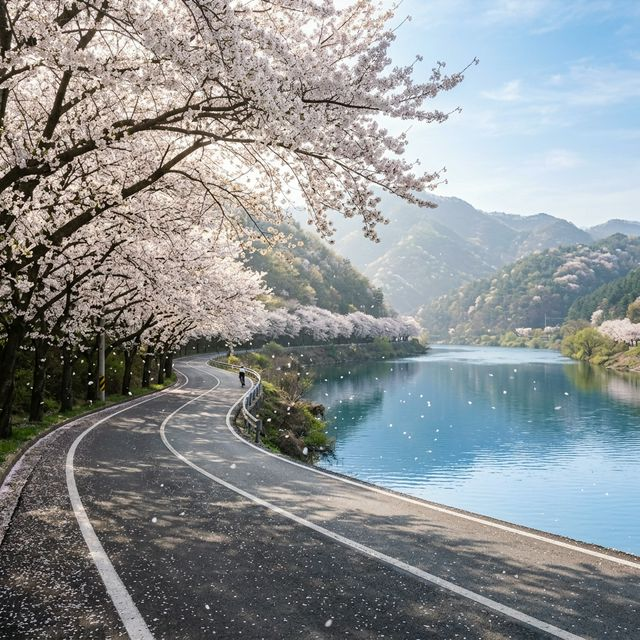
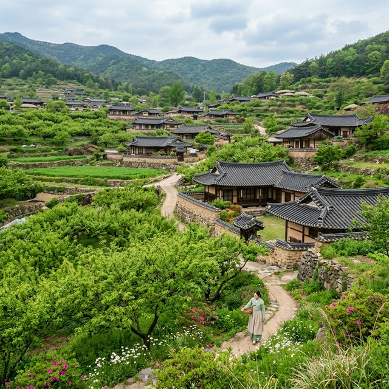
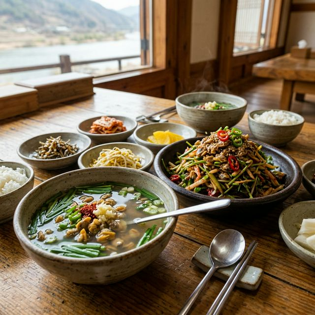

안녕하세요! 봄의 전령사 광양 매화축제가 지난 3월 22일을 끝으로 공식 일정을 마무리했습니다. 하지만 4월의 섬진강을 포기하기엔 이릅니다. 매화가 화려하게 수놓았던 광양 매화마을은 이제 고즈넉한 여유를 되찾았고, 그 대신 섬진강 줄기를 따라 굽이굽이 이어지는 19번 국도와 861번 지방도가 벚꽃 터널로 변신했기 때문입니다.
오늘 포스팅에서는 매화 축제 이후의 광양 매화마을 현장 분위기와, 지금 이 순간 놓쳐서는 안 될 섬진강 벚꽃 드라이브 명당 코스를 실시간으로 전해드립니다. 군중에서 벗어나 오롯이 봄의 정취를 느끼고 싶은 분들이라면 집중해 주세요!

섬진강 벚꽃길 — 강물을 따라 끝없이 이어지는 하얀 벚꽃 터널의 장관
솔직히 말씀드리면, 지금 광양 매화마을(청매실농원)에 가셔도 우리가 흔히 보던 그 하얀 매화 구름은 보기 힘듭니다. 2026년은 개화가 유난히 일러 3월 중순에 이미 절정을 지나버렸거든요. 하지만 꽃이 진 자리에 돋아난 **'연둣빛 어린 잎'**들이 주는 생동감은 또 다른 매력입니다.
매화 축제 기간의 그 엄청난 인파와 차량 정체가 부담스러워 방문을 미루셨다면, 지금이 오히려 기회입니다. 매화마을의 장독대 풍경은 여전히 조용히 자리를 지키고 있고, 강 건너 하동과 이어지는 도로는 분홍빛 벚꽃으로 물들어 있어 두 가지 봄을 동시에 즐길 수 있습니다.

축제 이후의 매화마을 — 꽃은 졌지만 연둣빛 새잎이 돋아나 평화로운 분위기를 자아냅니다.
섬진강 벚꽃길은 '한국의 아름다운 길 100선'에 선정될 만큼 유명하죠. 4월의 드라이브 명당 세 곳을 콕 집어 드립니다.
섬진강 벚꽃의 정석입니다. 하동 화개장터에서 구례로 이어지는 길은 벚나무 가지가 도로 위로 맞닿아 천연 벚꽃 지붕을 만듭니다. 창문을 내리고 달리면 차 안으로 꽃잎이 날아 들어오는 로맨틱한 경험을 하실 수 있습니다.
19번 국도가 너무 붐빈다면 섬진강을 사이에 둔 맞은편 도로인 861번 길을 이용해 보세요. 광양 매화마을을 지나는 이 코스는 강물과 벚꽃을 한 프레임에 담기 가장 좋은 사진 명당입니다. 19번 국도에 비해 상대적으로 차량이 적어 여유로운 드라이브가 가능합니다.
전라도 광양과 경상도 하동을 잇는 남도대교 위에서 서서 강줄기를 내려다보세요. 양옆으로 펼쳐진 벚꽃길과 유유히 흐르는 섬진강이 한눈에 들어옵니다. 교각 위에서 잠시 정차는 불가능하니, 인근 주차장에 차를 세우고 걸어서 다리를 건너보시는 것을 추천합니다.
섬진강 여행의 품격은 먹거리에서 완성됩니다. 4월에 꼭 먹어야 할 메뉴입니다.

섬진강 재첩 한 상 — 맑고 시원한 재첩국과 새콤달콤한 재첩회는 봄철 별미입니다.
📝 총평: 매화의 아쉬움을 벚꽃으로 채우는 4월의 섬진강
광양 매화축제 일정이 종료되었다고 실망하지 마세요. 매화가 지고 난 후 찾아오는 섬진강의 벚꽃 터널은 3월의 매화만큼이나, 어쩌면 그보다 더 화려한 풍경을 선사합니다. 이번 주말, 복잡한 축제
인파를 피해 고즈넉한 매화마을 산책과 환상적인 벚꽃 드라이브를 즐기러 떠나보시는 건 어떨까요?
출처 및 참고: 광양시 문화관광 홈페이지, 하동군 공식 블로그, 기상청 개화 확인 데이터
※ 벚꽃 상황은 날씨(바람, 비)에 따라 하루아침에 달라질 수 있습니다. 방문 전 실시간 CCTV나 최근 인스타그램 해시태그(#섬진강벚꽃)를 확인하는 것이 가장 정확합니다.
👉 함께 읽으면 좋은 글: 강릉 경포 벚꽃 실시간 현황 — 이번 주말이 진짜 골든타임!
👉 함께 읽으면 좋은 글: 창경궁 벚꽃 야간개장 — 예약 없이 즐기는 서울 밤 벚꽃 산책
#광양매화축제 #광양매화마을 #섬진강벚꽃길 #하동벚꽃 #섬진강드라이브 #19번국도벚꽃 #매화꽃진후 #4월가볼만한곳 #전라도벚꽃명소 #벚굴맛집 #재첩국맛집 #남도대교 #벚꽃라이딩 #광양가볼만한곳